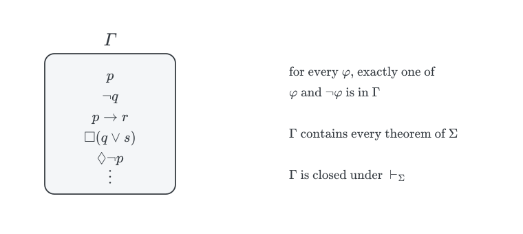
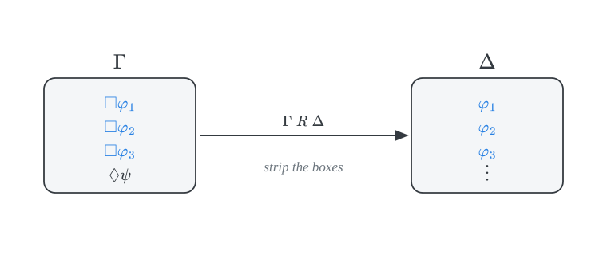
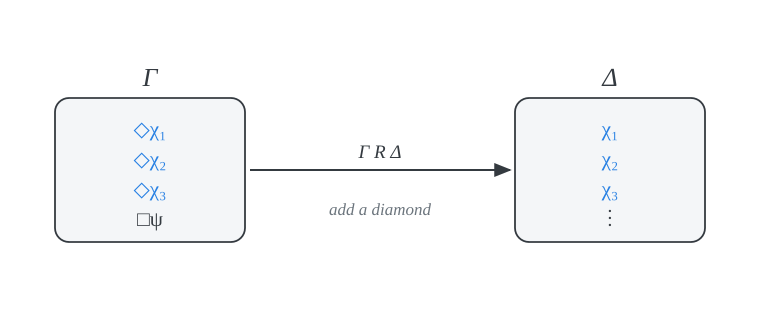
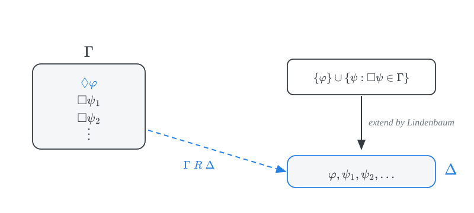
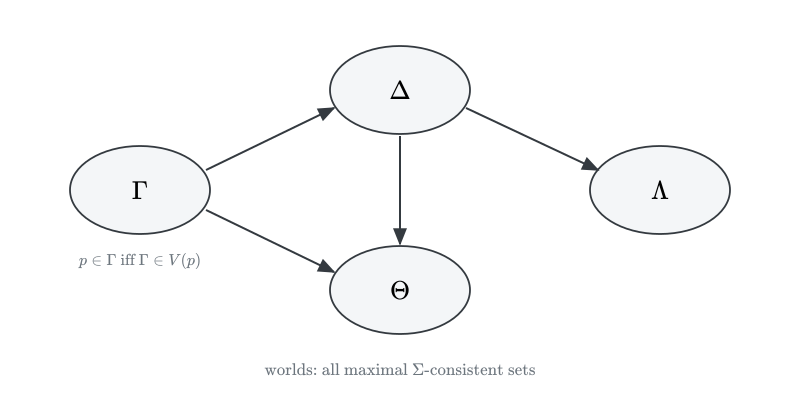
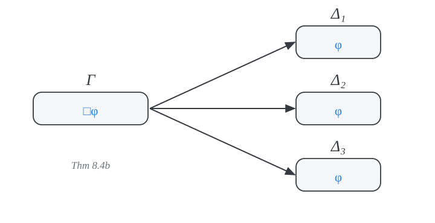

canonical models
PHIL 452 · Modal Logic
canonical models
\(\Sigma\) characterizes a class of frames \(\mathcal{C}\) iff \(\Sigma\) is sound and complete with respect to \(\mathcal{C}\): \[\vdash_\Sigma \varphi \quad \text{iff} \quad \models_{\mathcal{C}} \varphi\]
how to justify each direction (\(\Rightarrow\))
\(\Sigma\) is sound with respect to \(\mathcal{C}\):
\[\vdash_\Sigma \varphi \quad \text{only if} \quad \models_{\mathcal{C}} \varphi\]
We argue that the axioms of \(\Sigma\) are valid in all frames in \(\mathcal{C}\).
We observe that both \(\textsf{MP}\) and \(\textsf{RN}\) preserve validity in all frames in \(\mathcal{C}\).
how to justify each direction (\(\Leftarrow\))
\(\Sigma\) is complete with respect to \(\mathcal{C}\):
\[\vdash_\Sigma \varphi \quad \text{if} \quad \models_{\mathcal{C}} \varphi\]
We argue by contraposition. If \(\nvdash_\Sigma \varphi\), then \(\varphi\) is not valid in all frames in \(\mathcal{C}\). That is, if \(\nvdash_\Sigma \varphi\), then we find a world at which \(\varphi\) fails in some model based on a frame in \(\mathcal{C}\).
We build the canonical model \(\mathcal{M}_\Sigma\) for \(\Sigma\) from maximal \(\Sigma\)-consistent sets of formulas.
We verify that the canonical for \(\Sigma\) is a member of the class \(\mathcal{C}\).
the strategy

Each arrow will be justified in this deck:
- Theorem 8.1,
- Lindenbaum’s Lemma,
- Truth Lemma.
consistency
derivability
\(\varphi\) is \(\Sigma\)-derivable from \(\Gamma\), written \(\Gamma \vdash_\Sigma \varphi\), iff there is a finite conjunction \(\boldsymbol{\alpha}\) of formulas \(\alpha_1, \dots, \alpha_n \in \Gamma\) for which \[\vdash_\Sigma \boldsymbol{\alpha} \to \varphi\]
We do not allow premises inside a derivation. Otherwise \(\textsf{RN}\) would let us infer \(p \vdash_\Sigma \Box p\), which is undesirable.
consistency
\(\Gamma\) is \(\Sigma\)-consistent iff \(\Gamma \nvdash_\Sigma \bot\). That is, there is no finite conjunction \(\boldsymbol{\alpha}\) of members of \(\Gamma\) for which \[\vdash_\Sigma \boldsymbol{\alpha} \to \bot\]
Otherwise, \(\Gamma\) is \(\Sigma\)-inconsistent.
\(\varphi\) is \(\Sigma\)-consistent iff \(\{\varphi\}\) is, i.e., iff \(\nvdash_\Sigma \varphi \to \bot\). In particular, \(\nvdash_\Sigma \varphi\) iff \(\neg \varphi\) is \(\Sigma\)-consistent.
derivability and inconsistency
\(\Gamma \vdash_\Sigma \varphi\) iff \(\Gamma, \neg \varphi\) is \(\Sigma\)-inconsistent.
Proof. We consider each direction in turn:
(\(\Rightarrow\)) If \(\vdash_\Sigma \boldsymbol{\alpha} \to \varphi\), then \(\vdash_\Sigma (\boldsymbol{\alpha} \wedge \neg \varphi) \to \varphi\), and so \(\vdash_\Sigma (\boldsymbol{\alpha} \wedge \neg \varphi) \to \bot\) by \(\textsf{PL}\). Therefore, \(\Gamma, \neg\varphi\) is \(\Sigma\)-inconsistent.
(\(\Leftarrow\)) Suppose \(\vdash_\Sigma (\boldsymbol{\alpha} \wedge \neg \varphi) \to \bot\) for some conjunction \(\boldsymbol{\alpha}\) of members of \(\Gamma\). Since \(\vdash_\Sigma \neg \bot\), we have \(\vdash_\Sigma \neg(\boldsymbol{\alpha} \wedge \neg \varphi)\), whence \(\vdash_\Sigma \boldsymbol{\alpha} \to \varphi\) by \(\textsf{PL}\). Thus \(\Gamma \vdash_\Sigma \varphi\).
maximal consistency
maximal \(\Sigma\)-consistent sets
\(\Gamma\) is maximal \(\Sigma\)-consistent iff
- \(\Gamma\) is \(\Sigma\)-consistent, and
- for each \(\varphi\), if \(\Gamma, \varphi\) is \(\Sigma\)-consistent, then \(\varphi \in \Gamma\).
(Lindenbaum theorem) If \(\Delta\) is \(\Sigma\)-consistent set, then \(\Delta\) is a subset of some maximal \(\Sigma\)-consistent set \(\Gamma\).
Proof. Enumerate all the formulas of propositional logic
\[ \varphi_0, \varphi_1, \varphi_2, \dots \] and build a chain
\[ \Gamma = \Sigma_0 \subseteq \Sigma_1 \subseteq \Sigma_2 \subseteq \cdots \] where \(\Sigma_{0}\) is \(\Gamma\) and \(\Sigma_{n+1}\) is \(\Sigma_n, \varphi_n\) if that set is consistent, and \(\Sigma_n\) otherwise.
Let \(\Sigma = \bigcup_n \Sigma_n\). Notice that the identity of \(\Sigma\) is very sensitive to the details of the enumeration.
a maximal consistent set as a world

A maximal \(\Sigma\)-consistent set gives a complete and consistent description of a way the world might be. These will be the worlds of the canonical model for \(\Sigma\).
maximal consistent sets
If \(\Gamma\) is maximal \(\Sigma\)-consistent, then
\[ \begin{array}{llll} 1. & \Gamma \vdash_\Sigma \varphi & \text{iff} & \varphi \in \Gamma \\ 2. & \neg \varphi \in \Gamma & \text{iff} & \varphi \notin \Gamma\\ 3. & \varphi \to \psi \in \Gamma & \text{iff} & \varphi \notin \Gamma \ \text{or} \ \psi \in \Gamma \\ \end{array} \]
Proof. We look at each case in turn:
\(\Gamma \vdash_\Sigma \varphi \Leftrightarrow \varphi \in \Gamma\)
(\(\Rightarrow\)) If \(\Gamma \vdash_\Sigma \varphi\), then \(\Gamma, \neg\varphi\) is \(\Sigma\)-inconsistent. If \(\varphi \notin \Gamma\), then \(\Gamma, \varphi\) would likewise be \(\Sigma\)-inconsistent, which would make \(\Gamma\) itself \(\Sigma\)-inconsistent. So \(\varphi \in \Gamma\).
(\(\Leftarrow\)) Since \(\vdash_\Sigma \varphi \to \varphi\).
\(\neg \varphi \in \Gamma \Leftrightarrow \varphi \notin \Gamma\)
(\(\Rightarrow\)) If \(\neg \varphi \in \Gamma\), then \(\Gamma \vdash_\Sigma \neg\varphi\), so \(\varphi \notin \Gamma\) by consistency.
(\(\Leftarrow\)) If \(\varphi \notin \Gamma\), then \(\Gamma, \neg\neg\varphi\) is \(\Sigma\)-inconsistent, and thus \(\Gamma \vdash_\Sigma \neg \varphi\) by Theorem 8.1.
3 is analogous.
accessibility
the canonical accessibility relation
For maximal \(\Sigma\)-consistent \(\Gamma, \Delta\): \[\Gamma R \Delta \quad \text{iff} \quad \{\varphi : \Box \varphi \in \Gamma\} \subseteq \Delta\]

an equivalent characterization
\(\{\Diamond \varphi : \varphi \in \Delta\} \subseteq \Gamma\) iff \(\{\varphi : \Box \varphi \in \Gamma\} \subseteq \Delta\)

proof
\(\{\Diamond \varphi : \varphi \in \Delta\} \subseteq \Gamma\) iff \(\{\varphi : \Box \varphi \in \Gamma\} \subseteq \Delta\)
Proof. We look at each direction in turn:
(\(\Rightarrow\)) Suppose \(\{\Diamond \varphi : \varphi \in \Delta\} \subseteq \Gamma\) and \(\Box \varphi \in \Gamma\). For reductio, suppose \(\varphi \notin \Delta\). Then \(\neg \varphi \in \Delta\), so \(\Diamond \neg \varphi \in \Gamma\), i.e., \(\neg \Box \neg\neg \varphi \in \Gamma\). Since \(\vdash_\Sigma \neg \Box \neg \neg \varphi \leftrightarrow \neg \Box \varphi\), we get \(\neg \Box \varphi \in \Gamma\), and so \(\Box \varphi \notin \Gamma\). Contradiction.
(\(\Leftarrow\)) Suppose \(\{\varphi : \Box \varphi \in \Gamma\} \subseteq \Delta\). We now argue for the conditional: if \(\Diamond \varphi \notin \Gamma\), then \(\varphi \notin \Delta\). If \(\neg \Box \neg \varphi \notin \Gamma\), then \(\Box \neg \varphi \in \Gamma\) by maximality. So \(\neg \varphi \in \Delta\), and \(\varphi \notin \Delta\).
\(\Diamond\) and \(\Box\) in maximal consistent sets
If \(\Gamma\) is maximal \(\Sigma\)-consistent, then
\[ \begin{array}{llll} \text{a.} & \Diamond \varphi \in \Gamma & \text{iff} & \text{for some max $\Sigma$-con} \ \Delta, \ \Gamma R \Delta \ \text{and} \ \varphi \in \Delta\\ \text{b.} & \Box \varphi \in \Gamma & \text{iff} & \text{for every max $\Sigma$-con} \ \Delta, \ \text{if} \ \Gamma R \Delta, \ \text{then} \ \varphi \in \Delta \end{array} \]
- will follow from (a) by duality.
Focus on (a) now:
\((\Leftarrow)\) is immediate from the definition of \(R\).
\((\Rightarrow)\) is the existence lemma.
the existence lemma
If \(\Diamond \varphi \in \Gamma\), we build an accessible \(\Delta\) that contains \(\varphi\).

If a maximal \(\Sigma\)-consistent set extends \(\{\psi : \Box \psi \in \Gamma\}\), then it is accessible from \(\Gamma\). By Lindembaum’s theorem, we need only check that \(\{\varphi\} \cup \{\psi : \Box\psi \in \Gamma\}\) is \(\Sigma\)-consistent.
proof
If \(\Gamma\) is maximal \(\Sigma\)-consistent and \(\Diamond \varphi \in \Gamma\), then \(\{\varphi\} \cup \{\psi : \Box\psi \in \Gamma\}\) is \(\Sigma\)-consistent.
Proof. Suppose not. Then for some \(\Box\psi_1, \dots, \Box\psi_n \in \Gamma\):
\[ \begin{array}{lll} 1 & \vdash_\Sigma \varphi \wedge (\psi_1 \wedge \dots \wedge \psi_n) \to \bot & \\ 2 & \vdash_\Sigma (\psi_1 \wedge \dots \wedge \psi_n) \to \neg \varphi & \textsf{PL} \ 1\\ 3 & \vdash_\Sigma (\Box\psi_1 \wedge \dots \wedge \Box\psi_n) \to \Box \neg \varphi & \text{normality} \ 2\\ 4 & (\Box\psi_1 \wedge \dots \wedge \Box\psi_n) \to \Box \neg \varphi \in \Gamma & \Gamma \ \text{contains theorems}\\ 5 & \Box\psi_1 \wedge \dots \wedge \Box\psi_n \in \Gamma & \text{closure}\\ 6 & \Box \neg \varphi \in \Gamma & 4, 5 \end{array} \]
But \(\Box \neg \varphi\) is equivalent to \(\neg \Diamond \varphi\), which contradicts \(\Diamond \varphi \in \Gamma\) given the \(\Sigma\)-consistency of \(\Gamma\). So the set is \(\Sigma\)-consistent.
By Lindenbaum lemma, we may extends the set to the required \(\Delta\).
the canonical model
definition
The canonical model \(\mathcal{M}_\Sigma = (W_\Sigma, R_\Sigma, V_\Sigma)\) for \(\Sigma\):
- \(W_\Sigma\) is the set of all maximal \(\Sigma\)-consistent sets.
- \(\Gamma R_\Sigma \Delta\) iff \(\{\Diamond \varphi : \varphi \in \Delta\} \subseteq \Gamma\), i.e., iff \(\{\varphi : \Box \varphi \in \Gamma\} \subseteq \Delta\).
- \(V_\Sigma(p) = \{\Gamma \in W_\Sigma : p \in \Gamma\}\).
The canonical frame for \(\Sigma\) is \((W_\Sigma, R_\Sigma)\).

the truth lemma
For each maximal \(\Sigma\)-consistent set \(\Gamma\) and each \(\varphi\): \[\mathcal{M}_\Sigma, \Gamma \Vdash \varphi \quad \text{iff} \quad \varphi \in \Gamma\]
Proof. By induction on the complexity of \(\varphi\):
\[ \begin{array}{lllll} \text{Base case}: & & & & \\ &\mathcal{M}_\Sigma, \Gamma \Vdash p & \text{iff } & \Gamma \in V_\Sigma(p) & \\ & & \text{iff } & p \in \Sigma & \textsf{definition of} \ \Vdash \\[8pt] \text{Induction step for } \neg\textbf{:} & & & & \\ & \mathcal{M}_\Sigma, \Gamma \Vdash \neg \varphi & \text{iff } & \mathcal{M}_\Sigma, \Gamma \nVdash \varphi & \textsf{definition of} \ \Vdash \\ & & \text{iff } & \varphi \notin \Sigma & \textsf{inductive hypothesis} \\ & & \text{iff } & \neg \varphi \in \Sigma & \textsf{maximal consistency} \\[8pt] \text{Induction step for } \to\textbf{:} & & & & \\ & \mathcal{M}_\Sigma, \Gamma \Vdash \varphi \to \psi & \text{iff } & \mathcal{M}_\Sigma, \Gamma \nVdash \varphi \text{or} \ \mathcal{M}_\Sigma, \Gamma \Vdash \psi & \textsf{definition of} \ \Vdash \\ & & \text{iff } & \varphi \notin \Sigma \ \text{or} \ \psi \in \Sigma & \textsf{inductive hypothesis} \\ & & \text{iff } & \varphi \to \psi \in \Sigma & \textsf{maximal consistency} \\ \end{array} \]
truth lemma: \(\Box\)
Proof. \[ \begin{array}{lllll} & \mathcal{M}_\Sigma, \Gamma \Vdash \Box \varphi & \text{iff } & \text{for all} \ \Delta \in W_\Sigma, \ \text{if} \ \Gamma R_\Sigma \Delta, \ \text{then} \ \mathcal{M}_\Sigma, \Delta \Vdash \varphi & \textsf{definition of} \ \Vdash \\ & & \text{iff} & \text{for all} \ \Delta \in W_\Sigma, \ \text{if} \ \Gamma R_\Sigma \Delta, \ \text{then} \ \varphi \in \Delta & \textsf{inductive hypothesis}\\ & & \text{iff} & \Box \varphi \in \Gamma & \textsf{Thm 8.4b}\\ \end{array} \]

This is the only step where the existence lemma is needed.
where we stand
If \(\nvdash_\Sigma \varphi\), then \(\varphi\) fails at some world of \(\mathcal{M}_\Sigma\).
So \(\Sigma\) is complete with respect to a class of frames \(\mathcal{C}\) if \(\mathcal{C}\) contains the canonical frame for \(\Sigma\).
corollary: \(\textsf{K}\) is complete with respect to all frames
\(\textsf{K}\) is complete with respect to the class of all frames.
Proof. The canonical frame for \(\textsf{K}\), \((W_\textsf{K}, W_\textsf{K})\), belongs to the class of all frames.
some open questions:
Is \(\textsf{KT}\) complete with respect to the class of reflexive frames?
Is the canonical frame for \(\textsf{KT}\), \((W_\textsf{KT}, W_\textsf{KT})\) a reflexive frame?
Is \(\textsf{KB}\) complete with respect to the class of symmetric frames?
Is the canonical frame for \(\textsf{KB}\), \((W_\textsf{KB}, W_\textsf{KB})\) a symmetric frame?